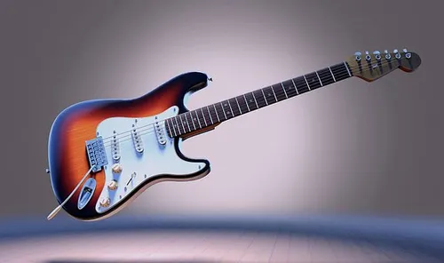

La chitarra elettrica è un tipo di chitarra in cui la vibrazione delle corde viene rilevata da uno o più pick-up.
Il segnale viene quindi prelevato all'uscita e convogliato in un amplificatore affinché il suono sia udibile.
Dal punto di vista organologico appartiene alla famiglia degli elettrofoni (cordofoni elettroacustici) in quanto il suono viene generato attraverso la perturbazione
del campo magnetico del pick-up (una bobina di filo conduttore avvolta intorno a uno o più magneti) da parte della corda vibrante.
Tale perturbazione genera un impulso elettrico (grazie al principio dell’induzione elettromagnetica illustrato nella Legge di Lenz) che viene poi amplificato.
I marchi piu blasonati sono :
ma nel mercato odierno ci sono alternative altrettanto valide per ogni fascia di prezzo.Esistono principalmente tre tipi di chitarra elettrica: Solid body, hollow body e semy-hollow.